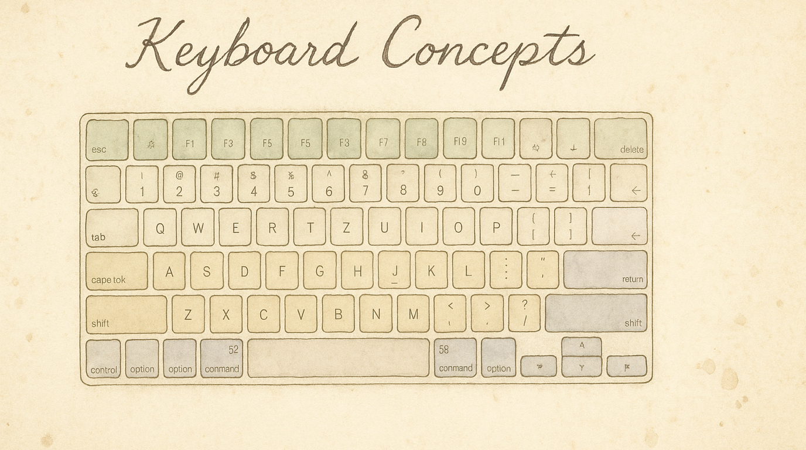

Not every keyboard improvement needs a full setup guide. These packs are simple on/off toggles that solve common annoyances in seconds — enable them in the Rules tab and you're done.
Move Escape to a closer key. Escape is far from the home row, but you press it constantly — dismissing dialogs, canceling searches, exiting modes. This pack moves it closer.
Options: | Preset | What it does | |--------|-------------| | Caps Lock (default) | Caps Lock sends Escape | | Backtick | Backtick (`) sends Escape | | Tab | Tab sends Escape |
Tip: If you're using home row mods, the Caps Lock Remap pack already gives you Escape on tap + Hyper on hold — you may not need this pack.
Forward-delete, delete word, and delete line without reaching. MacBooks don't have a forward-delete key, and deleting a whole word requires Option+Backspace. This pack puts enhanced delete actions on the navigation layer.
Options: | Preset | What it does | |--------|-------------| | Forward Delete | Delete key on the navigation layer | | Delete Word | Option+Backspace on the navigation layer | | Delete Line | Cmd+Backspace on the navigation layer |
Requires the navigation layer to be active (hold Leader key).
Driverless behavior: Backup Caps Lock toggles the native macOS Caps Lock state. Physical Caps Lock input remaps additionally need compatible keyboard setup.
Bring back Caps Lock when you need it. If you've remapped Caps Lock to something more useful (Escape, Hyper, etc.), you might occasionally still need the original Caps Lock for typing in ALL CAPS.
Options: | Preset | What it does | |--------|-------------| | Both Shifts (default) | Press Left Shift + Right Shift together to toggle Caps Lock | | Double-tap Escape | Tap Escape twice quickly to toggle Caps Lock |
Quick access to macOS window management. Six fixed shortcuts on the navigation layer for Expose, desktop switching, and Notification Center.
Hold Leader, then press:
| Key | Action |
|---|---|
M |
Mission Control (Expose) |
Q |
Show all windows for current app |
T |
Show Desktop |
C |
Notification Center |
, |
Move to left desktop |
. |
Move to right desktop |
Each pack can be enabled independently. They work alongside all other KeyPath features.